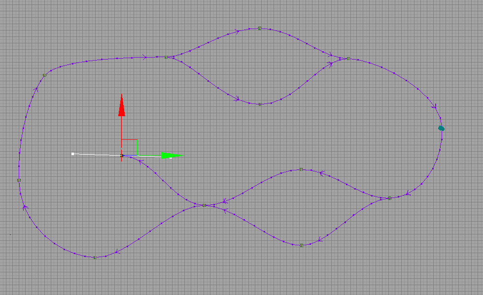

UDN
Search public documentation:
UsingSplineActorsCH
English Translation
日本語訳
한국어
Interested in the Unreal Engine?
Visit the Unreal Technology site.
Looking for jobs and company info?
Check out the Epic games site.
Questions about support via UDN?
Contact the UDN Staff
日本語訳
한국어
Interested in the Unreal Engine?
Visit the Unreal Technology site.
Looking for jobs and company info?
Check out the Epic games site.
Questions about support via UDN?
Contact the UDN Staff
使用Spline(样条曲线)Actors
概述

SplineActor系统和AI路径系统是不同的，因为它永远不会自动地制作连接或进行调整，并且它不会执行任何检测来确保实体在节点之间可以畅通无阻地穿行。然而，却可以对路径的形状获得更多的控制。编辑
连接
创建连接最容易的方法是，按下ALT键并拖动先到一个已经存在的SplineActor上。对于大多数编辑器来说，这是复制的快捷方式，它将会插入一个新的样条曲线到现有的样条曲线中。按照这种方式，您可以很容易地通过重复地在末端按下ALT并拖拽那个点到新的位置来扩展一个样条曲线。 另一种创建连接的方法是选择两个SplineActors，然后按下句号键(.)。这将会把第一个选中的SplineActors连接到第二个上。如果两个点已经有一条样条曲线连接到了一起，那么按下句号键将会使样条曲线反向，这使得很容易地对其进行修复。 您也可以选择两个点，右击其中一个，然后选择Spline Options(样条曲线选项)->Connect/Flip(连接/翻转)。断开
断开连接的最简单的方法是按住ALT键并点击样条曲线本身的任何一点。这和在Kismet等编辑器中断开连接的快捷方式是一样的。 您也可以选择两个点，右击它们其中的一个并选择Spline Options(样条曲线选项)->Break(断开)。 另外您可以通过选中所有的连接并右击其中的一个，然后选择Spline Options(样条曲线选项)->Break All Links(断开所有连接)来断开到一组SplineActors的所有连接。调整形状
当您选择一个SplineActor时，您将会看到一个白色的手柄，它控制着那个点的曲率。可以使用鼠标点击并拖拽每个手柄末端的小的正方形来修改形状。您也可以直接在SplineActor属性窗口中输入您期望的切线值。注意SplineActor的切线值是相对于actor存储的。这意味着如果您旋转actor，曲线也会跟着被旋转。这允许您选择多个SplineActors并平移/旋转它们到地图的不同部分，并且保持着曲线的形状。改变方向
样条曲线有特定的方向，由曲线上的箭头指出。如果您希望改变曲线的方向，您可以选择两个连接的点并按下句号(.)键，正如上面所提到的。注意，在末端的切线的方向也是跟着改变的，所以样条曲线的形状将会改变。 如果您希望改变包含许多SplineActors的整个样条曲线的形状，您可以选中所有样条曲线，右击其中一个并选择Spline Options(样条曲线选项)->Reverse All Directions(翻转所有方向)。注意，这个选项将会尽量位置整个样条曲线的形状，并且会翻转每个选中的SplineActor的切线的方向。禁用分支
 在游戏中，您可以通过简单地使用一个SplineActors上的Toggle Kismet(切换Kismet)动作来启用及禁用目的地SplineActors。
在游戏中，您可以通过简单地使用一个SplineActors上的Toggle Kismet(切换Kismet)动作来启用及禁用目的地SplineActors。